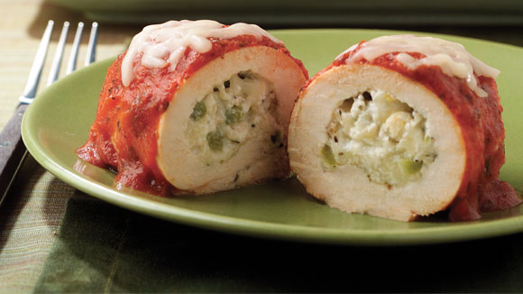

La Mejor Cocina
Para los amantes de la Cocina
Favoritos:
La comida rápida más saludable
12/9/2017
Tarde o temprano todos nos encontramos pasando por un restaurante de comida rápida, pero no tiene por qué ser tan malo. No hay duda de que muchas de las especialidades de estos locales contienen demasiadas calorías y grasas saturadas, pero los tiempos han cambiado. Cada cadena de restaurantes ha incluido platillos un poco más sanos y hoy te decimos cuáles puedes comerte sin culpa ni agobio. Este es nuestro top 5: la comida rápida más saludable.
Comidas italianas
10/9/2017

Los latinos somos atrevidos en la cocina y es por ello que nos gusta experimentar con lo mejor de la comida internacional. En esta ocasión, te presentamos lo mejor de la cocina italiana con platillos de sabor auténtico, más la ventaja de poder ser preparados en casa. Disfruta de recetas hechas a base de pasta, pollo, pescado e inclusive carne de res que encantarán y deslumbrarán a toda tu familia. ¡Da un viaje al mediterráneo con cada bocado!